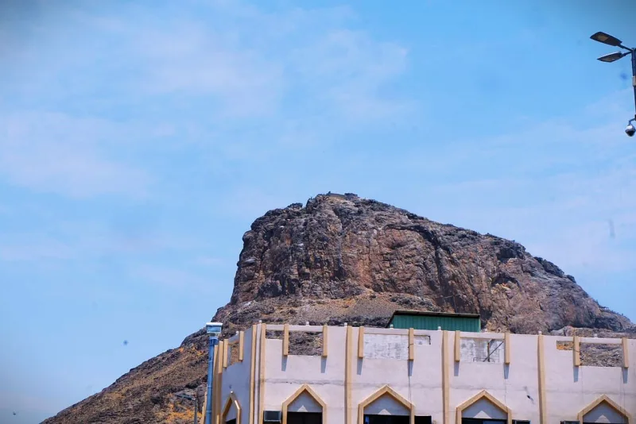
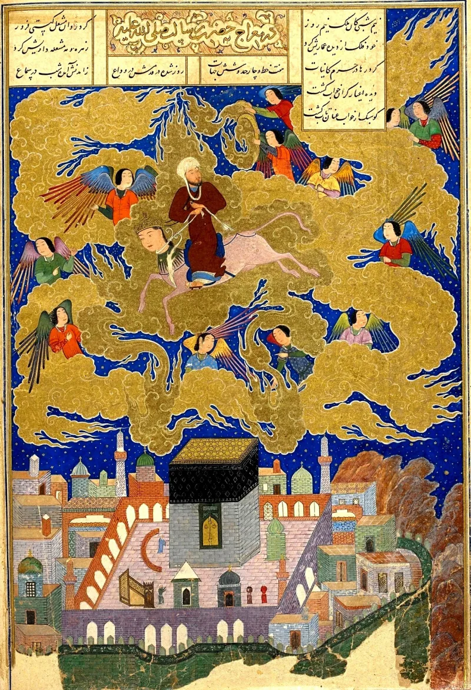
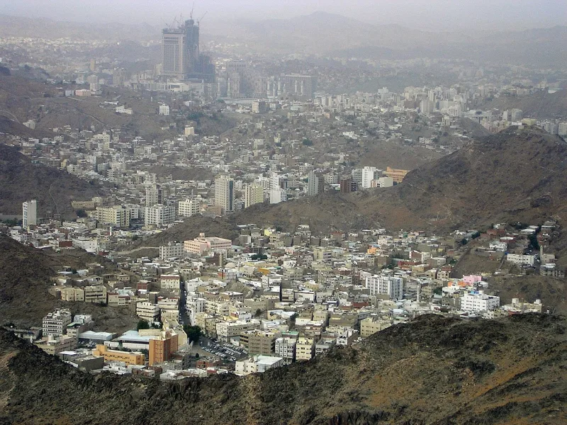

The facts sit in Islam's own trusted sources. You can make this point from their books alone.
Sahih al-Bukhari 3, repeated at 6982, gives Aisha's long narration. In the cave of Hira a being seized and squeezed him three times.
He fled to Khadijah shaking and cried "Cover me! Cover me!" He said: "I fear that something may happen to me."
Ibn Ishaq's biography, Islam's earliest, records what he first thought it might be. The worst options available: "ecstatic poet or a man possessed...
Woe is me" (Guillaume, page 106).
Khadijah and her cousin Waraqah bin Naufal. Waraqah was a Christian who knew the earlier scriptures.
He pronounced the visitor divine. Sahih Muslim 160 carries the account too.
Mahajjah answers that terror is what meeting the transcendent produces. Moses fled from the sign at the bush (Quran 28:31).
Fear also argues for sincerity, since an impostor invents a flattering call, not one that leaves him fearing madness. On the line about throwing himself from mountain tops in Bukhari 6982, they are right, and this site says so.
Ibn Hajar, in Fath al-Bari, identifies it as a balagh of al-Zuhri — introduced by fima balaghana, as we have heard — carried only in Ma'mar's recension and absent from those of 'Uqayl and Yunus. It is not Aisha's testimony, and it carries no sahih weight.
Waraqah's role, they say, is providence: a scholar of earlier revelation recognising the same angel who came to Moses.
They admit the facts, and honesty means dropping the weakest part. Do not build on the suicide line; by Islam's own hadith science it is weak.
Build on what nobody disputes. The one receiving the revelation could not identify its source, and the identification came from a man.
Biblical callings run the other way, with God naming himself (Isaiah 6; Jeremiah 1; Luke 1). Galatians 1:8 warns about even an angel from heaven.
"How do you know the visitor in the cave was Gabriel? That is a real question, not a trap."



They say terror is what meeting God does, and it argues for his honesty.
Mahajjah, a traditional Sunni scholarship site, answers that terror is exactly what a real meeting with God produces. Moses fled from the sign at the bush (Quran 28:31). Fear also argues for sincerity, since a fraud invents a flattering call, not one that leaves him fearing madness.
The line about the mountain tops, they stress, is not Aisha's testimony at all. Ibn Hajar, in Fath al-Bari, identifies it as a balagh of al-Zuhri — a hearsay note, introduced by fima balaghana, as we have heard. It is carried only in Ma'mar's recension, and it is absent from those of 'Uqayl and Yunus. It is a broken report with no sahih weight.
Waraqah's role is read as providence. A scholar of earlier revelation recognised the same Namus, or angel, who came to Moses. That confirms continuity. It does not supply legitimacy Muhammad lacked.
Strong for you, but drop the suicide line: their own hadith science weakens it.
This is graded admitted because every load-bearing fact sits in Islam's own canon and is undisputed. The terror. Cover me. I fear for myself. And the need for Waraqah, a Christian, to certify the encounter as divine (Bukhari 3 and 6982; Muslim 160).
Honesty requires conceding the strongest Muslim point, and this site does. The line about suicidal despair is weak by Islam's own hadith science. It rests on al-Zuhri's unattributed note, through Ma'mar alone. So do not build the argument on it.
Build it on what no one disputes. The man who received the revelation could not himself identify its source, and a human being made the identification. Biblical callings carry God naming himself, and Paul warns about an angel from heaven preaching another gospel (Galatians 1:8). The severity is high, because how do you know it was Gabriel touches the foundation of everything downstream.